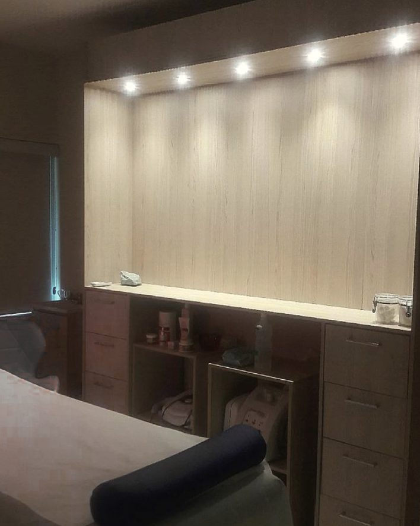
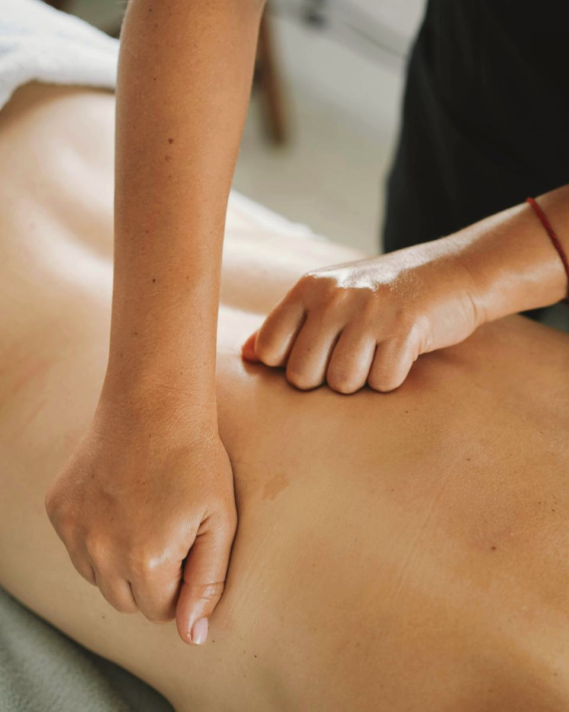
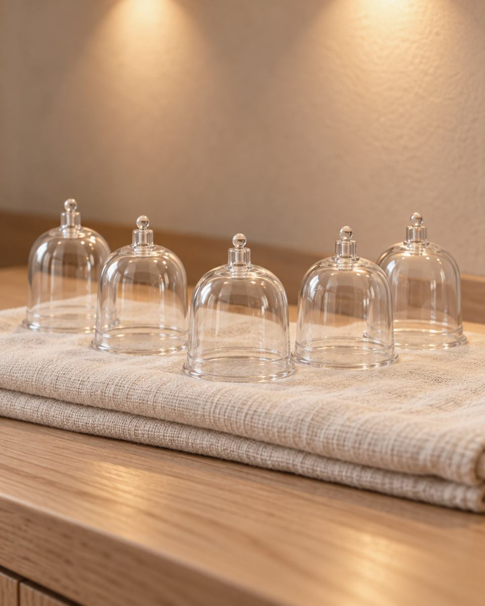
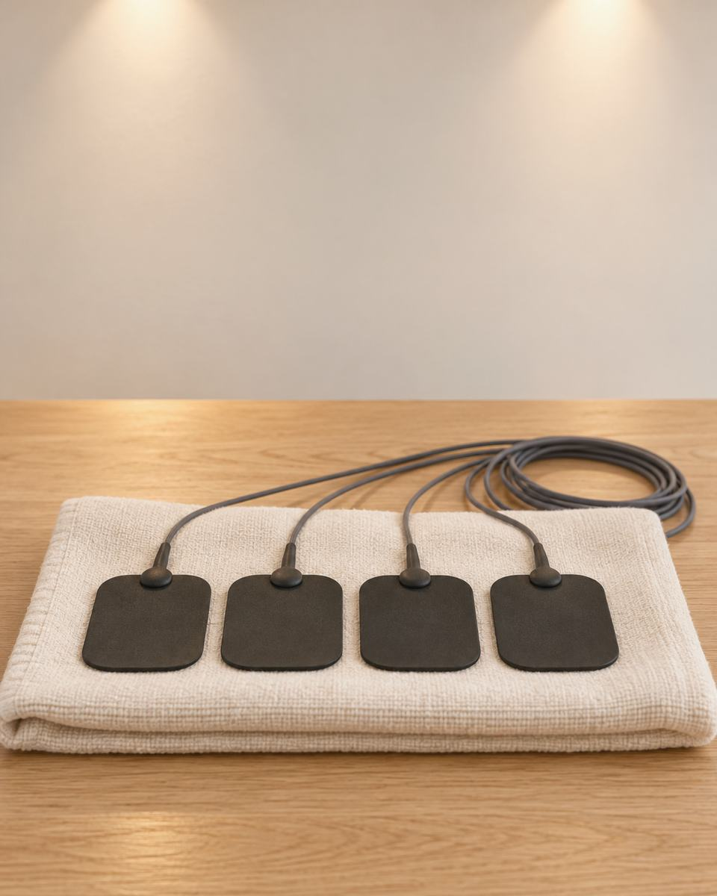
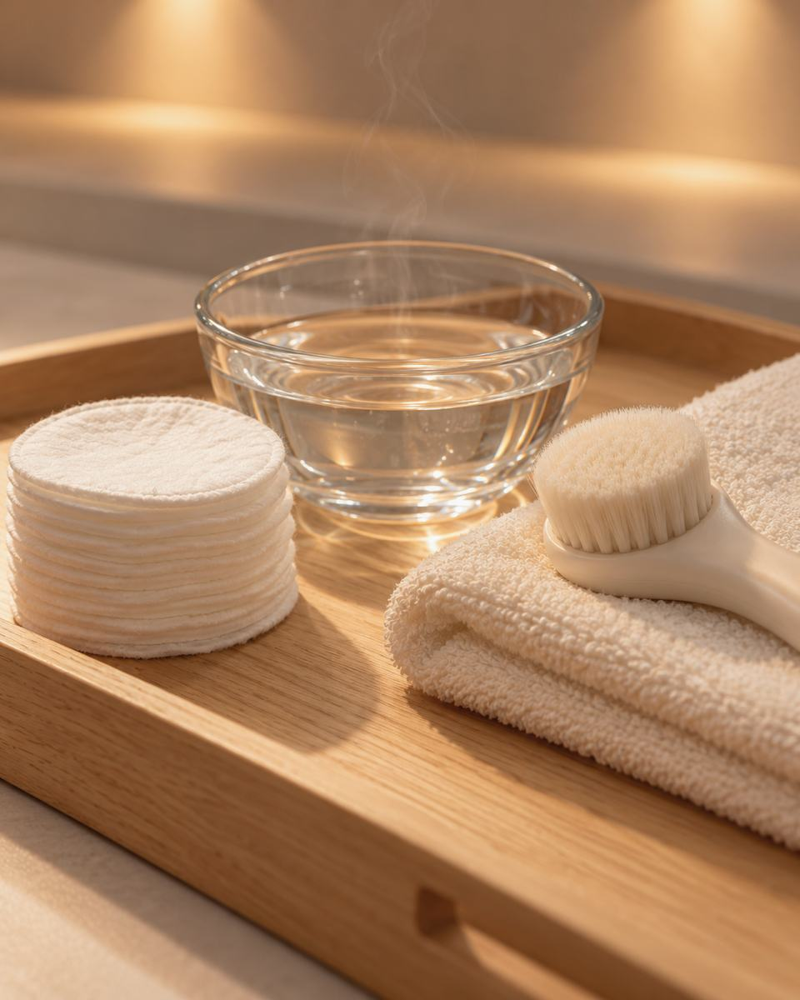
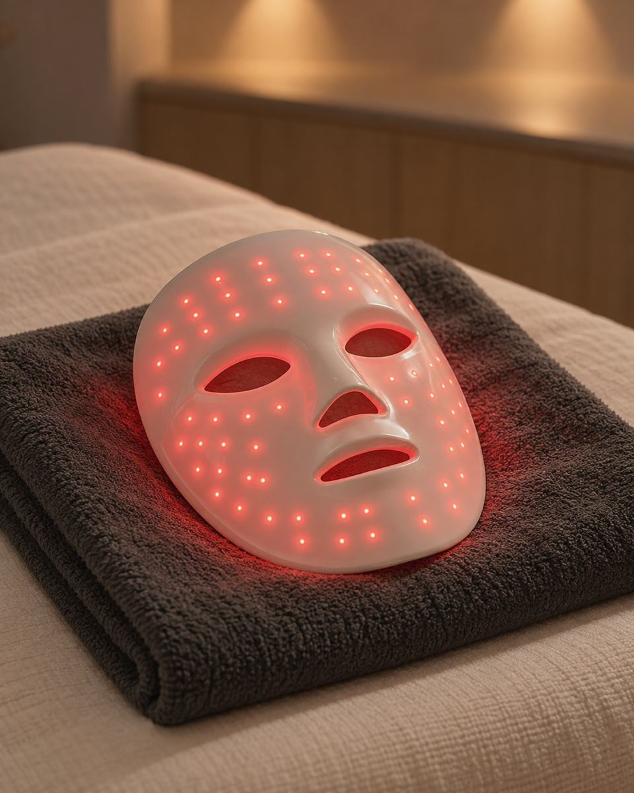
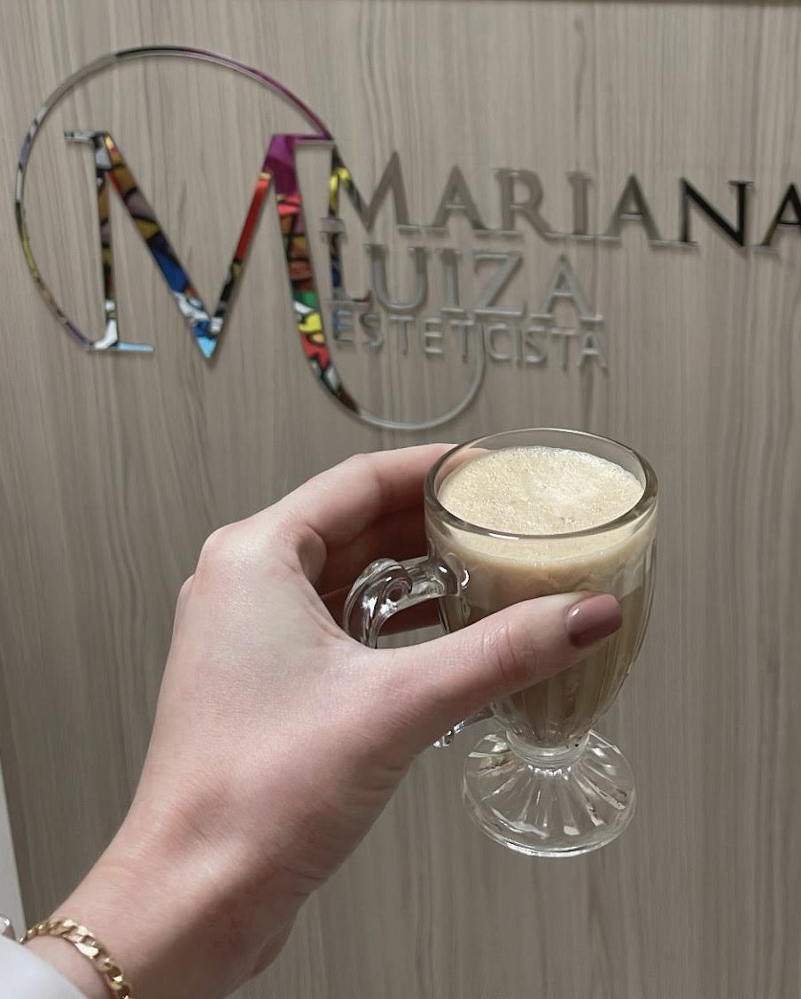

Drenagem linfática manual
Manobras suaves, feitas com as mãos, na região do corpo que você indicar.
ESTETICISTA · CENTRO, FLORIANÓPOLIS
Sempre muito bem-vinda.
Drenagem, liberação miofascial e limpeza de pele com Mariana Luiza, numa clínica organizada e aconchegante do Centro.

AGENDA
De segunda a sexta, a clínica atende até as 21h30. Dá para vir depois do trabalho.
Agendar horárioPROCEDIMENTOS
O que é cada procedimento e como ele é feito.
Manobras suaves, feitas com as mãos, na região do corpo que você indicar.

Pressão lenta e mantida das mãos sobre a musculatura tensa.

Copos que fazem uma leve sucção sobre a pele. Pode ser associada com a liberação miofascial na mesma sessão.

Eletrodos sobre a pele conduzem uma corrente que faz o músculo contrair.

Higienização do rosto feita na maca, com vapor de ozônio.

Uma máscara de luz apoiada sobre o rosto, numa técnica não invasiva. Cada cor de luz tem o seu comprimento de onda e chega a uma profundidade da pele.
Muito amor envolvido pela minha profissão.
A SESSÃO
Uma sala de painéis de madeira clara e luz quente, num ambiente organizado.
A agenda é pontual: a sessão começa no horário que você combinou pelo WhatsApp.
A Mari explica cada procedimento com clareza antes de começar. Pergunte também sobre os produtos e protocolos.
Uma boa conversa para acompanhar o procedimento e, no final, um bom café.
DRENAGEM
O movimento é devagar e a pressão é leve, acompanhando o caminho da circulação linfática pelo corpo.
A drenagem pode ser associada com vibromanta, uma manta que vibra sobre o corpo durante a sessão.
Se você tem alguma condição de saúde acompanhada por médico, conte na mensagem antes de agendar.
Perguntar sobre drenagemPOR ONDE COMEÇAR
Toque numa opção e veja a sugestão. A decisão final fica para a conversa.
Conte na mensagem há quanto tempo sente o corpo assim.
Conversar sobre issoConte se você treina e em que momento do dia isso aparece.
Conversar sobre issoEscreva do seu jeito o que está sentindo, sem precisar saber o nome de nenhum procedimento.
Conversar sobre isso
ONDE FICA
A recepção tem o balcão de madeira e o logo da Mari em acrílico.
PRIMEIRA SESSÃO
Agende seu horário pelo WhatsApp e diga o que você procura. Os horários livres vêm na resposta.
Se quiser, fale da sua rotina de treino e de alimentação. Para a Mari, a mudança de hábitos anda junto com a estética.
O conselho dela é não deixar passar tanto tempo para a sua próxima sessão.
DÚVIDAS
Pode incomodar no começo. Nas palavras da Mari, a primeira sessão pode ser mais desconfortável mesmo. Se a pressão estiver forte, avise na hora.
Depende do procedimento escolhido. Duração e valor são passados pelo WhatsApp.
Pode. Conte que é a primeira vez e, juntas, vocês acertam o primeiro horário.
CONVERSE COM A MARI
Mande uma mensagem ou ligue para (48) 99997-2954 e pergunte o que quiser.
AGENDAR
De segunda a sábado, no Centro de Florianópolis.
Agendar pelo WhatsApp Ver os procedimentos